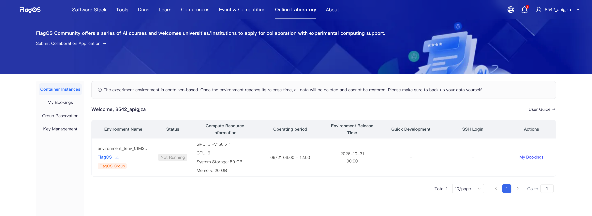
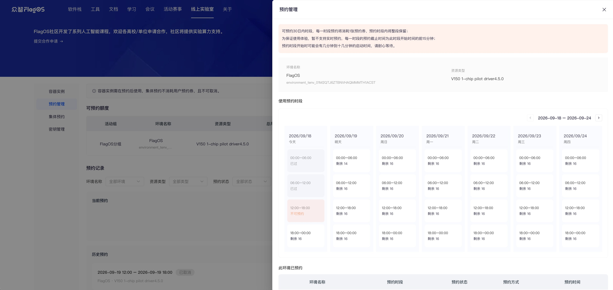
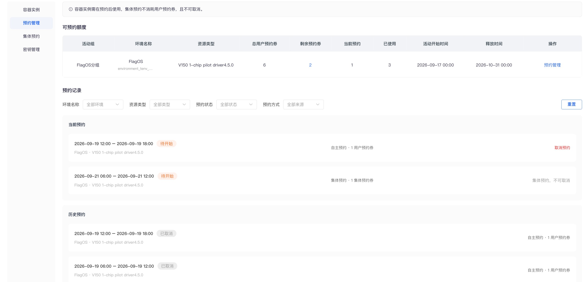
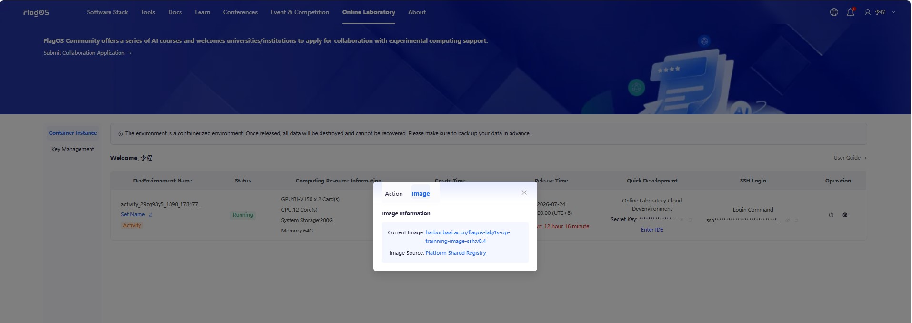
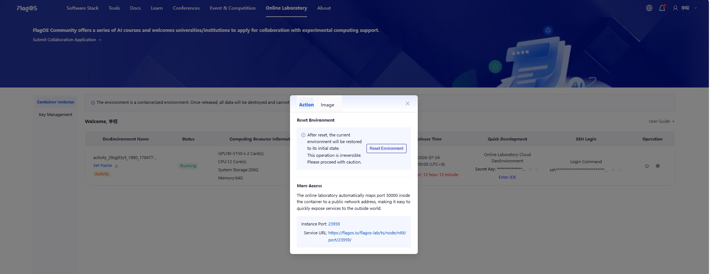
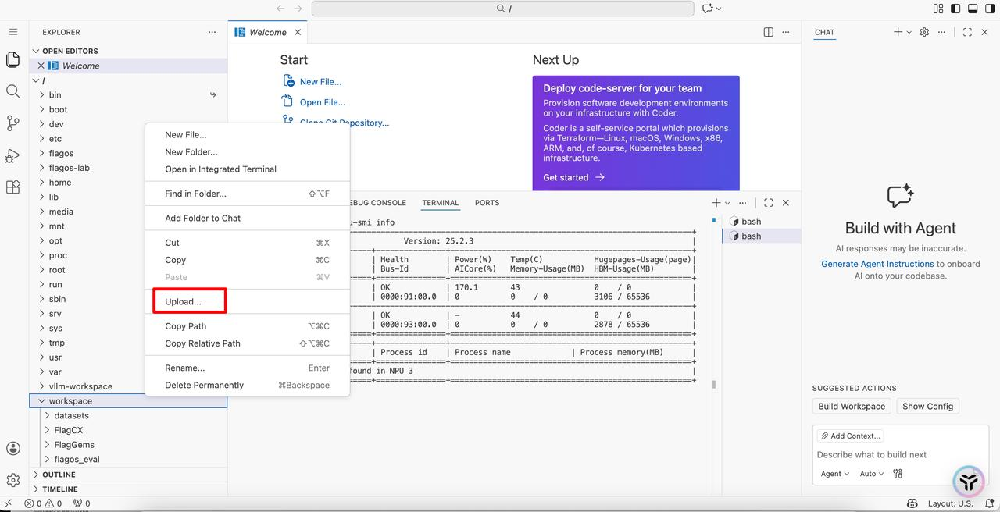
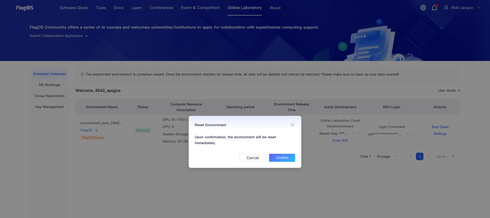

Online Laboratory User Guide#
Getting started#
Open https://flagos.net/Home in your browser.
Click Online Laboratory at the top. Select Phone Login or Email Login. Enter your phone number or email address, and click Get Verification Code. Enter the verification code, check the box to accept the community usage agreement and privacy policy, and click Login/Register Now.
View all unreleased container instances, reservation information, access endpoints, and other related information associated with your account.

Note
If there is a My Bookings menu in the left sidebar of your Online Laboratory, your container instance is in Reservation mode, and you should refer to the Reservation Mode section of this guide.
If there is no such menu, the container instance is in Dedicated mode, and you should refer to the Dedicate Mode section of this guide.
1. Reservation mode#
Reservation Rules#
To ensure the overall resource utilization of the platform, the platform allocates reservation vouchers when a container instance is created, and the container instance is then used within fixed time slots by reservation.
The fixed time slots are divided by Beijing time as follows: 0:00-6:00, 6:00-12:00, 12:00-18:00, and 18:00-24:00. Reserving one time slot consumes one reservation voucher, and the entire slot is reserved for you.
The instance container is automatically pre-warmed and allocated at the start of the reserved time slot. Click Start to use it. When the slot ends, the system automatically saves the changes inside the container, shuts it down, and releases it.
If the reserved time slot is not actually used, the reservation voucher is not refunded.
Reservation vouchers are divided by type. The Reservation Management menu displays and operates on user reservation vouchers or collective reservation vouchers.
Time slot reservations for a container instance can be made starting 7 days before the activity begins, and only slots within 7 days from the current time can be reserved. Consecutive reservations are supported (the container is not shut down in between).
To ensure a good experience, real-time reservation is not supported for now. The reservation deadline for each time slot is 15 minutes before the slot starts (for example, after 11:45 on the same day, the 12:00-18:00 slot can no longer be reserved).
User or collective reservations can be cancelled before the time slot starts, and the corresponding reservation voucher is refunded. Collective reservations cannot be cancelled by regular users.
When the reserved time slot ends, the system automatically shuts down the container and saves the data inside it (the data is not destroyed). When the voucher’s release time is reached, the system releases the container and destroys the data inside it. Please make sure to keep your own copy of your data.
Reserve time slots and start container instance#
A container instance in Reservation mode can only be accessed within the reserved time slots.
On the Container Instance page, check the current and reserved time slots of a container instance in the Operating period column.
In the Actions column, click Reservations to jump to the reservation drawer of the corresponding container instance on the Reservation Management page, where you can reserve runtime slots.

After selecting one or more reservable time slots and click Confirm, the time slots are reserved. You are routed to the My Booking tab.
The Available Quota list shows the container instance and reservation voucher information, and is used to make reservations for the instance.
When the current time is more than 7 days before the activity start time, the container instance cannot be reserved.
When the remaining reservation vouchers are 0, the available quota of this container instance is used up, but this does not affect reservations for other container instances.
In the Reservation Records, regular users can cancel self reservations and event group administrator can cancel group reservers that have not been started.

Note
To select the current time slot, verify its availability with your administrator. If available, the administrator can select the time slot on your behalf. The administrator reserved time slot appears in the Current Reservations section and the instance turns to running status.
If a group reservation conflicts with an existing user self reservation, the system automatically cancels the user reservation and refunds the corresponding user reservation voucher.
Go to the Container Instances tab, the environment container is in the powered-off state. When reserved time slot comes, Click Start in the Action column to start the instance.
2. Dedicated mode#
On the Container Instance page, in the Operation column, check the image information:
In the pop-up window, click Image.

Operations in online development environment#
Access online development environment#
After starting the instance, you can use one of the following methods to access the cloud-based online development environment:
Option 1: SSH Connection To access the development environment via SSH, follow these steps:
Create a public key on your computer.
In the SSH Login column, click Go to Key Management for configure.
On the Key Management page, click Add Public Key in the upper left corner.
In the Add Public Key dialog box, paste the public key created on your computer into SSH Public Key, fill in the public key name in Public Key Name, and click Submit. You can also click Edit or Delete to edit or delete a public key.
Option 2: Direct Access to the Development Environment To access the environment directly, follow these steps:
Option 3: Access via Public Network To access the development environment from a public network, follow these steps. You can map the service for the development environment to port 30000.
In the pop-up window, click Action. In the More Access section, click the Service URL link to open the development environment.


{kind=link}
{kind=link}
{kind=link}
{kind=link}
{kind=link}
{kind=link}
{kind=link}
Query the computing configuration#
Query the computing power configuration through terminal commands according to the GPU card type.
For Iluvatar GPU cards, use the command:
ixsmi
For Huawei Ascend NPU cards, use the command:
npu-smi info
{kind=link}
{kind=link}
Upload and download files#
You can upload files from your local place and download files to your local place, such as code packages through the following methods:
Right-click your
Workspaceand select Upload…
Right-click your
Workspaceand select Download…
{kind=link}
Warning
The experimental environment is a containerized environment. All data will be permanently deleted and unrecoverable upon release. Please back up your data locally in advance.
For detailed usage instructions of Visual Studio Code, please refer to: https://code.visualstudio.com/docs.
Reset Environment#
To reset the development environment to its initial state, perform the following steps:
In the pop-up window, click Action. In the Reset Environment section, click Reset Environment. In the Reset Environment pop-up window, click Confirm.

{kind=link}
Warning
This action is irreversible. Please proceed with caution. After the environment is reset, all data will be permanently deleted and cannot be recovered. Please make sure to back up your data locally in advance.